La semana, el día y los cambios, con pictogramas de ARASAAC listos para recortar.
Pictogramas: Sergio Palao. Origen: ARASAAC (arasaac.org). Licencia CC BY-NC-SA. Propiedad: Gobierno de Aragón.
Material gratuito · Licencia CC BY-NC-SA 4.0 · ideducando.es
60pictogramas para recortar
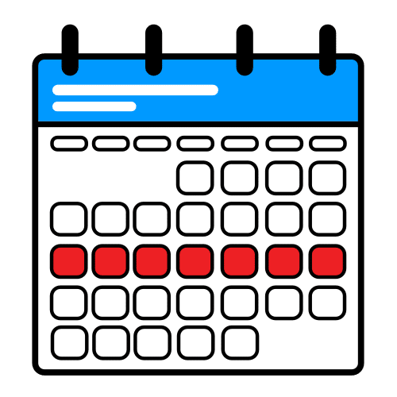
Mi semana
Nombre:
Pega un círculo de velcro rugoso en cada círculo gris. Encima van las tarjetas pequeñas, con velcro suave detrás.
Pictogramas: Sergio Palao. Origen: ARASAAC (arasaac.org). Licencia CC BY-NC-SA. Propiedad: Gobierno de Aragón.
Mi día
Cuando acabo algo, paso su tarjeta a «Terminado».
Pictogramas: Sergio Palao. Origen: ARASAAC (arasaac.org). Licencia CC BY-NC-SA. Propiedad: Gobierno de Aragón.
Primero y después
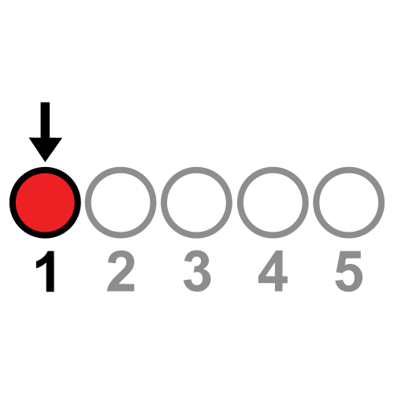
Primero
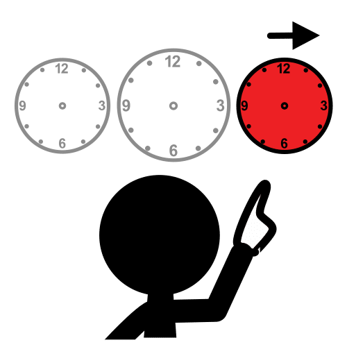
Después
Para una sola transición: en «Primero», lo que toca; en «Después», algo que le guste. Cumple siempre lo que pones
en «Después». Valen las tarjetas grandes y las pequeñas: las dos se pegan en el mismo círculo.
Pictogramas: Sergio Palao. Origen: ARASAAC (arasaac.org). Licencia CC BY-NC-SA. Propiedad: Gobierno de Aragón.
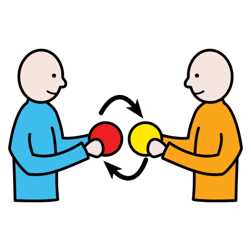
Si hay un cambio
Lo de «Antes» ya no toca. Hacemos lo de «Ahora».
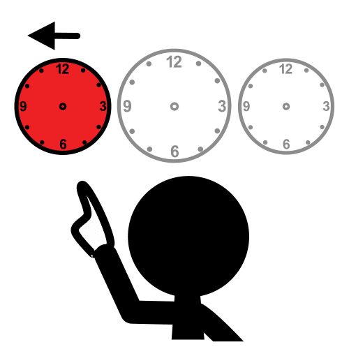
Antes
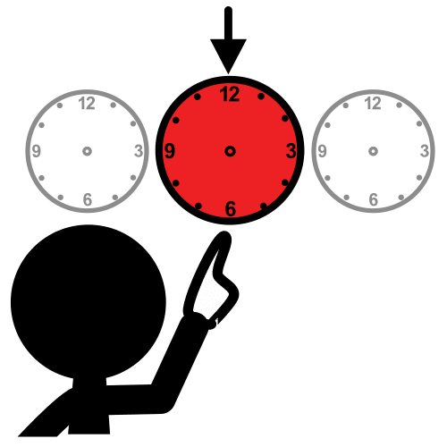
Ahora
Si me pongo nervioso o nerviosa, puedo:
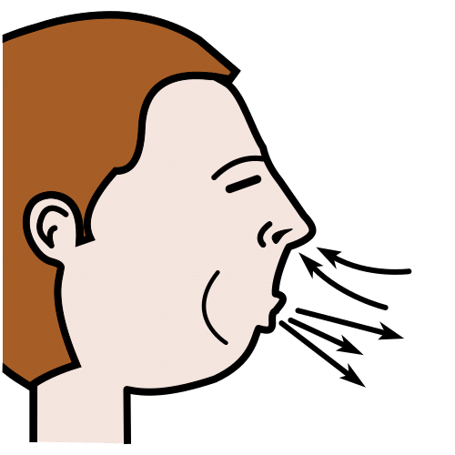
Respirar despacio
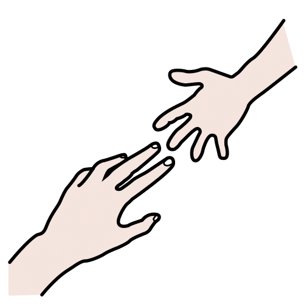
Pedir ayuda
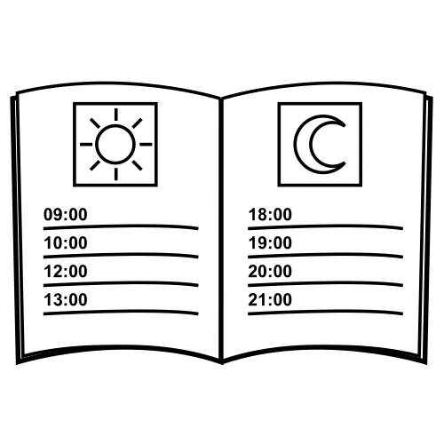
Mirar mi agenda
Pictogramas: Sergio Palao. Origen: ARASAAC (arasaac.org). Licencia CC BY-NC-SA. Propiedad: Gobierno de Aragón.
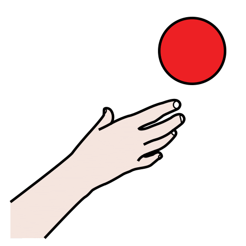
¿Qué necesito?
Señalo lo que necesito. Así me entienden.
Ayuda
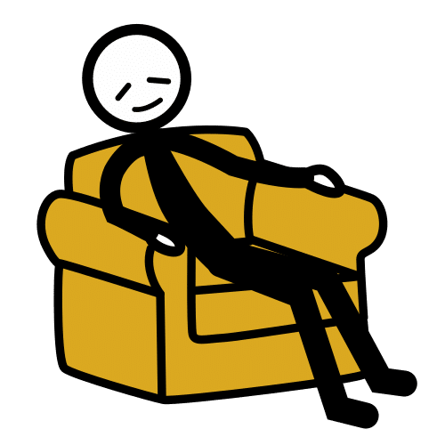
Descanso
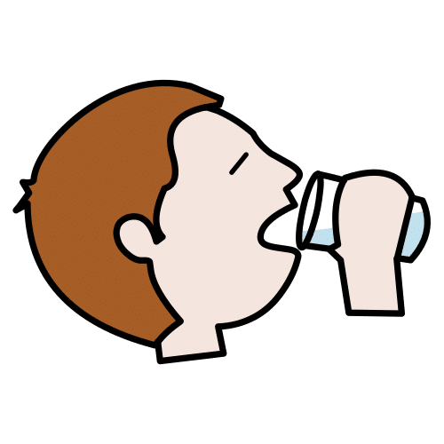
Agua
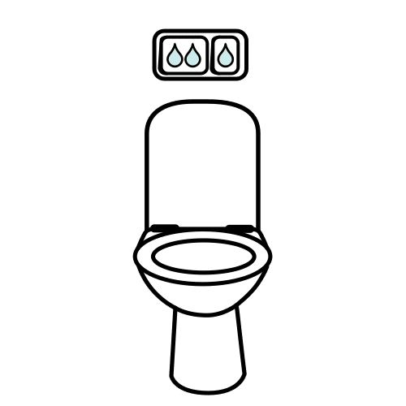
Ir al baño
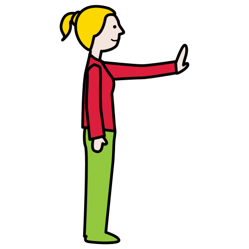
Parar
Otra cosa:
Tira para la mesa: recórtala por la línea de puntos y pégala en su mesa con celo.
Ayuda
Descanso
Agua
Ir al baño
Parar
Cuelga el tablero cerca de su sitio. Cada vez que lo pida, señalando o con palabras, responde enseguida y di la
palabra en voz alta.
Pictogramas: Sergio Palao. Origen: ARASAAC (arasaac.org). Licencia CC BY-NC-SA. Propiedad: Gobierno de Aragón.
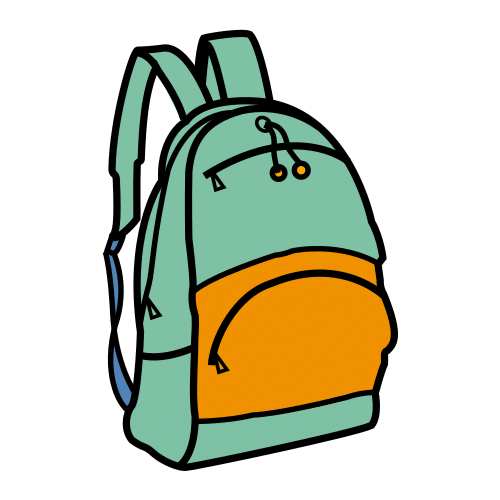
Preparo la mochila
Meto cada cosa en la mochila y marco su círculo.
Plastifica la hoja y usa un rotulador de pizarra blanca: se borra con un pañuelo de papel. «Para ir al cole» se
usa en casa, por la mañana, y «Para volver a casa», en clase, antes de salir. En la última fila, dibuja o escribe
lo que necesite ese día.
Pictogramas: Sergio Palao. Origen: ARASAAC (arasaac.org). Licencia CC BY-NC-SA. Propiedad: Gobierno de Aragón.
¿Cómo ha ido el día?
En casa, cuento mi día. Rodeo lo que he hecho y cómo me he sentido.
Hoy he hecho Rodea lo que has hecho
Me he sentido Rodea una cara
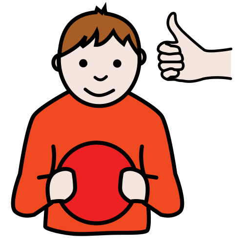
Me ha gustado
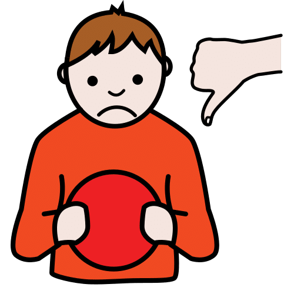
No me ha gustado
Para la familia: plastificada, se usa con rotulador de pizarra blanca y se borra con un pañuelo
de papel. Preguntad de una en una y esperad la respuesta: puede señalar, rodear o dibujar. Si hoy no quiere
contarlo, no pasa nada. Lo intentáis otro día.
Pictogramas: Sergio Palao. Origen: ARASAAC (arasaac.org). Licencia CC BY-NC-SA. Propiedad: Gobierno de Aragón.
Ayer, hoy y mañana
Pongo cada día en su sitio. Debajo, pongo lo que pasa ese día.
Los días de la semana: plastifica la hoja, recórtalos por la línea de puntos y pega velcro suave detrás.
Cómo usarlo
Cada mañana, mueve los días una casilla: el de «Hoy» pasa a «Ayer» y el de «Mañana», a «Hoy».
Debajo de cada día, pon una o dos tarjetas pequeñas con lo más importante: «Ayer hubo Música».
Pictogramas: Sergio Palao. Origen: ARASAAC (arasaac.org). Licencia CC BY-NC-SA. Propiedad: Gobierno de Aragón.
Guía para docentes y familias
Cómo usar la agenda visual
Saber qué va a pasar da tranquilidad. La agenda visual convierte el tiempo, que no se ve, en tarjetas que se pueden
mirar y tocar. Esta versión trae 60 pictogramas de ARASAAC listos para recortar y cinco tableros nuevos. Sirve en
el cole y en casa.
Es un apoyo clásico para el alumnado con trastorno del espectro del autismo (TEA). También ayuda a quien tiene un
trastorno del desarrollo del lenguaje (TDL) o discapacidad intelectual, y le viene bien a toda la clase. Una
revisión de 31 estudios concluye que las agendas visuales son una práctica basada en la evidencia para el
alumnado con TEA, sobre todo cuando se enseñan de forma sistemática (Knight, Sartini y Spriggs, 2015).
Qué incluye
P. 3Mi semana: cinco días con cinco casillas.
P. 4Mi día: siete pasos y su columna de «Terminado».
P. 5Primero y después: para una sola transición.
P. 6Si hay un cambio: lo que estaba previsto y lo que toca ahora.
P. 7¿Qué necesito?: para pedir ayuda, descanso, agua, ir al baño o parar.
P. 8Preparo la mochila: para ir al cole y para volver a casa.
P. 9¿Cómo ha ido el día?: para contarlo en casa.
P. 10Ayer, hoy y mañana: con los siete días para recortar.
P. 11Tarjetas pequeñas: 80 de 44 × 21 mm, en dos hojas.
P. 13Tarjetas grandes: 12 de 8 × 8 cm, en dos hojas.
Las tarjetas pequeñas caben también en las casillas de la agenda en blanco de IdEducando, que sigue en el
catálogo para quien prefiera sus propios pictogramas.
Antes de empezar
Monta la agenda como explica la página 2.
Elige solo las tarjetas que vais a usar. Cada tarjeta lleva el dibujo y la palabra: las pautas del Diseño
Universal para el Aprendizaje (DUA) proponen ilustrar con varios medios (CAST, 2024, consideración 2.5). Usad
siempre la misma tarjeta para la misma actividad.
Decide dónde vive la agenda: a la altura de sus ojos y siempre en el mismo sitio.
En el día a día
Al empezar el día, repasad juntos la agenda. Señala cada tarjeta mientras la nombras.
Antes de cada cambio de actividad, volved a la agenda: «¿Qué toca ahora?».
Al terminar una actividad, el alumno o la alumna pasa su tarjeta a «Terminado».
Si algo cambia, avisa con tiempo y usa el tablero «Si hay un cambio».
Los tableros nuevos
Si hay un cambio. Pon en «Antes» la tarjeta de lo que estaba previsto y en «Ahora», la nueva.
Explícalo con pocas palabras y delante de él o de ella. Las ideas para calmarse de abajo se practican un día
tranquilo, antes de necesitarlas.
¿Qué necesito? Enséñalo en el momento justo: cuando tenga sed, señala «Agua» y dilo. Responde
siempre, también cuando lo pide sin hablar. La tira va en su mesa.
Preparo la mochila. Marca cada cosa con el rotulador al meterla. Una columna se usa en casa y la
otra, en el cole.
¿Cómo ha ido el día? Viaja en la mochila. En casa, la familia pregunta y el niño o la niña
rodea la respuesta.
Ayer, hoy y mañana. Cada mañana, los días se mueven una casilla. Debajo de cada día va lo más
importante que pasa.
Guía para docentes y familias
Adaptarla a cada peque
Cada niño o niña necesita su propia agenda. Mira qué entiende hoy y empieza por ahí.
Cuánta información
Empieza con 2 o 3 tarjetas y añade más cuando las entienda.
Si el día entero es mucho, enseña solo la mañana. Si aún cuesta, usa solo «Primero y después».
Cuando el día ya está claro, pasad a la semana.
Cómo representar cada actividad
Objeto real. Una cuchara para el comedor o una pelota para el recreo.
Foto. Del sitio real, sin otros niños ni niñas.
Pictograma. Las tarjetas de esta agenda.
Palabra. Escrita en una tarjeta en blanco.
Empieza por la forma que ya entiende y sube un escalón solo cuando el anterior esté claro.
Ideas para cada necesidad
TEA: la misma rutina cada día y los cambios, con aviso. Los apoyos visuales y las ayudas del
adulto están entre las 28 prácticas con respaldo para el alumnado autista (Hume y otros, 2021).
TDL: di la palabra cada vez que señalas una tarjeta, con frases cortas: «Primero, asamblea. Después, recreo».
Discapacidad intelectual: menos tarjetas y más grandes. Practicad la rutina juntos muchas veces.
Toda la clase: una agenda grande en la pizarra ayuda a todo el grupo y no señala a nadie.
Retirar los apoyos poco a poco
El objetivo es la autonomía, a su ritmo. Las pautas DUA proponen dar apoyos y retirarlos de forma gradual (CAST,
2024, consideración 5.3).
Cuándo
Cuando mira la agenda sin que se lo digas, sabe qué viene después y lleva bien los cambios. Espera a verlo varias
semanas seguidas.
Cómo, paso a paso
Retira primero tu ayuda, de más a menos: guiar su mano, señalar la agenda, decir una palabra y, al final, nada.
Enseña menos de una vez: de la semana al día, del día a la mañana y de la mañana a lo siguiente.
Cambia el formato: de la agenda de la pared a una tira en su mesa o a una agenda de papel.
Pasa del dibujo a la palabra con las tarjetas en blanco.
Cambia una sola cosa cada vez y espera a que esté asentada.
Si aparecen nervios
Vuelve al paso anterior sin darle importancia. Después de unas vacaciones o de una temporada difícil, es normal
necesitar otra vez más apoyo.
Agenda visual con pictogramas. IdEducando, noviembre de 2026. Ficha y novedades:
ideducando.es/material-gratuito/agenda-visual-pictogramas
Las páginas 6 a 10 se inspiran en «Mi agenda diaria», de Montse Navarro, publicada en ARASAAC (material 8137).
Los tableros y el diseño son de IdEducando. La agenda en blanco sigue en
ideducando.es/material-gratuito/agenda-visual-semanal.
Fuentes: Knight, V., Sartini, E. y Spriggs, A. D. (2015), Journal of Autism and Developmental Disorders,
45(1), 157-178; Hume, K. y otros (2021), Journal of Autism and Developmental Disorders, 51(11),
4013-4032; CAST (2024), CAST Universal Design for Learning Guidelines version 3.0, consideraciones 2.5 y
5.3, udlguidelines.cast.org.
Pictogramas: «Los símbolos pictográficos utilizados son propiedad del Gobierno de Aragón y han sido creados por
Sergio Palao para ARASAAC (https://arasaac.org), que los distribuye bajo Licencia Creative Commons BY-NC-SA».
ARASAAC es el Centro Aragonés para la Comunicación Aumentativa y Alternativa. Si adaptas el material, mantén este
texto. Con pictogramas de ARASAAC, el material no se puede vender: es gratis siempre.
Licencia Creative Commons Reconocimiento-NoComercial-CompartirIgual 4.0 (CC BY-NC-SA 4.0): puedes copiarla y
adaptarla citando a IdEducando, sin fines comerciales y con la misma licencia.